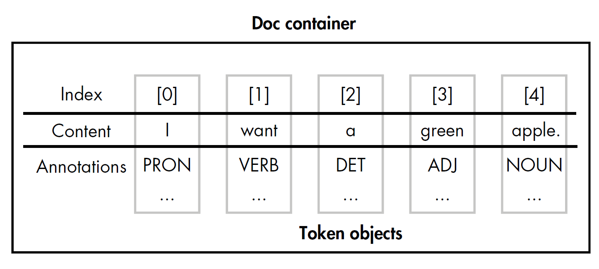
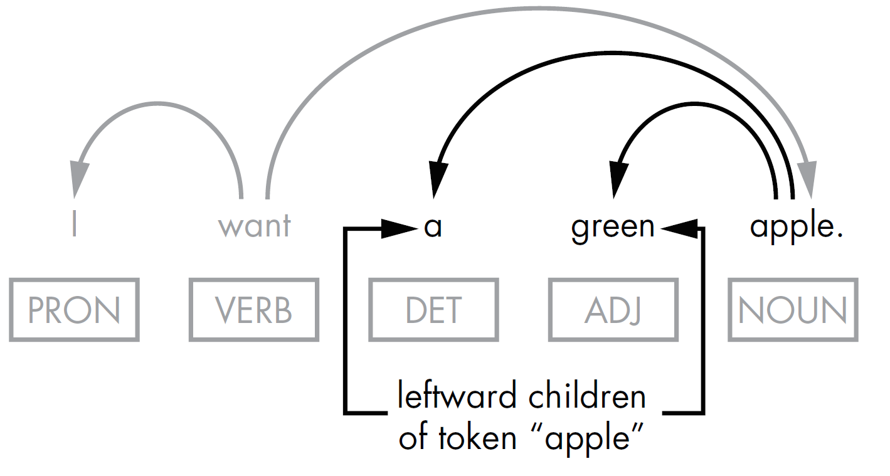

1. Container Objects in spaCy¶
Container objects in spaCy mimic the structure of natural language texts: a text is composed of sentences, and each sentence contains tokens. Token, Span, and Doc, the most widely used container objects in spaCy from a user’s standpoint, represent a token, a phrase or sentence, and a text, respectively. A container can contain other containers - for example, a Doc contains Tokens. In this section, we’ll explore working with these container objects.
1.1. Doc <class 'spacy.tokens.doc.Doc'>¶
The Doc() constructor, requires two parameters:
a vocab object, which is a storage container that provides vocabulary data, such as lexical types (adjective, verb, noun …);
a list of tokens to add to the Doc object being created.
from spacy.tokens.doc import Doc
from spacy.vocab import Vocab
"""
create a spacy.tokens.doc.Doc object
using its constructor
"""
doc = Doc(Vocab(), words = [u'Hello', u'World!'])
print(doc)
print(type(doc))
Hello World!
<class 'spacy.tokens.doc.Doc'>
1.2. Token¶
spaCy’s Token object is a container for a set of annotations related to a single token, such as that token’s part of speech.
A Doc object contains a collection of the Token objects generated as a result of the tokenization performed on a submitted text. These tokens have indices, allowing you to access them based on their positions in the text.

import spacy
nlp = spacy.load('en_core_web_sm')
doc = nlp(u'I want a green apple.')
# token_text1 and token_text2 produce the same results
token_text1 = [token.text for token in doc]
token_text2 = [doc[i].text for i in range(len(doc))]
print(token_text1)
print(token_text2)
['I', 'want', 'a', 'green', 'apple', '.']
['I', 'want', 'a', 'green', 'apple', '.']
1.3. Token.lefts Token.rights and Token.children¶

import spacy
nlp = spacy.load("en_core_web_sm")
doc = nlp(u'I want a green apple.')
print([t for t in doc[4].lefts])
print([t for t in doc[4].children])
print([t for t in doc[1].rights])
[a, green]
[a, green]
[apple, .]
1.4. Vocab¶

Whenever possible, spaCy tries to store data in a vocabulary, the Vocab storage class, that will be shared by multiple documents;
To save memory, spaCy also encodes all strings to hash values. For example, “coffee” has the hash 3197928453018144401.
Entity labels like “ORG” and part-of-speech tags like “VERB” are also encoded.
import spacy
nlp = spacy.load('en_core_web_sm')
doc = nlp('I love coffee!')
for token in doc:
lexeme = doc.vocab[token.text]
print(lexeme.text, lexeme.orth, lexeme.shape_,
lexeme.prefix_, lexeme.suffix_, lexeme.is_alpha,
lexeme.is_digit, lexeme.is_title, lexeme.lang_)
print(doc.vocab.strings["coffee"]) # 3197928453018144401
print(doc.vocab.strings[3197928453018144401]) # 'coffee'
I 4690420944186131903 X I I True False True en
love 3702023516439754181 xxxx l ove True False False en
coffee 3197928453018144401 xxxx c fee True False False en
! 17494803046312582752 ! ! ! False False False en
3197928453018144401
coffee
1.5. Span¶
Span can be obtained as simple as doc[start:end] where start and end are the index of starting token and the ending token, respectively. The two indices can be
manually specified; or
computed through pattern matching
import spacy
from spacy.matcher import Matcher
from spacy.tokens import Doc, Span, Token
nlp = spacy.load("en_core_web_sm")
matcher = Matcher(nlp.vocab)
# A dependency label pattern that matches a word sequence
pattern = [{"DEP": "nsubj"},{"DEP": "aux"},{"DEP": "ROOT"}]
matcher.add("NsubjAuxRoot", [pattern])
doc = nlp(u"We can overtake them.")
# 1. Return (match_id, start, end) tuples
matches = matcher(doc)
for match_id, start, end in matches:
span = doc[start:end]
print("Span: ", span.text)
print("The positions in the doc are: ", start, "-", end)
# 2. Return Span objects directly
matches = matcher(doc, as_spans=True)
for span in matches:
print(span.text, span.label_)
Span: We can overtake
The positions in the doc are: 0 - 3
We can overtake NsubjAuxRoot
1.6. Doc.noun_chunks and Retokenising¶
A noun chunk is a phrase that has a noun as its head.
import spacy
nlp = spacy.load('en_core_web_sm')
doc = nlp(u'The Golden Gate Bridge is an iconic landmark in San Francisco.')
# Retokenize to treat each noun_chunk as a single token
with doc.retokenize() as retokenizer:
for chunk in doc.noun_chunks:
print(chunk.text + ' ' + str(type(chunk)))
retokenizer.merge(chunk)
#doc.retokenize().merge(chunk)
for token in doc:
print(token)
The Golden Gate Bridge <class 'spacy.tokens.span.Span'>
an iconic landmark <class 'spacy.tokens.span.Span'>
San Francisco <class 'spacy.tokens.span.Span'>
The Golden Gate Bridge
is
an iconic landmark
in
San Francisco
.
1.7. Doc.sents¶
the Doc object’s doc.sents property is an iterator over the sentences in a Doc object. For this reason, you can’t use this property to refer to sentences by index, but you can iterate over them in a loop or create a list of Span objects where each span represents a sentence.
Doc object’s
doc.sentsproperty is angeneratorobject, i.e. an iterator over the sentences in a Doc object. You can use for each in loop, but not subset indexing.Each member of the generator object is a Span of type spacy.tokens.span.Span.
Tip
spans = list(doc.sents) will return a list of span objects that each represent a sentence.
import spacy
nlp = spacy.load('en_core_web_sm')
doc = nlp(u'A storm hit the beach. It started to rain.')
for sent in doc.sents:
print(type(sent))
# Sentence level index
[sent[i] for i in range(len(sent))]
# Doc level index
[doc[i] for i in range(len(doc))]
<class 'spacy.tokens.span.Span'>
<class 'spacy.tokens.span.Span'>
[A, storm, hit, the, beach, ., It, started, to, rain, .]